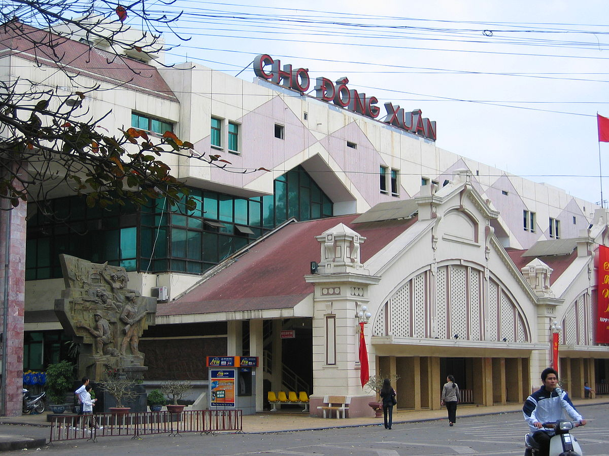
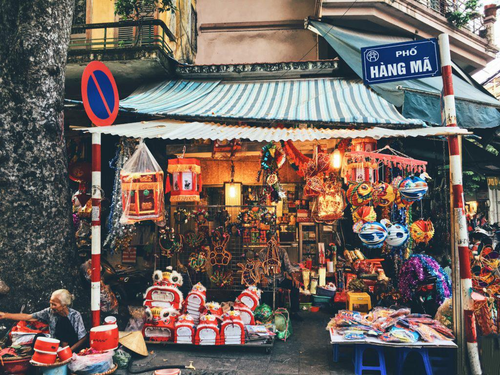
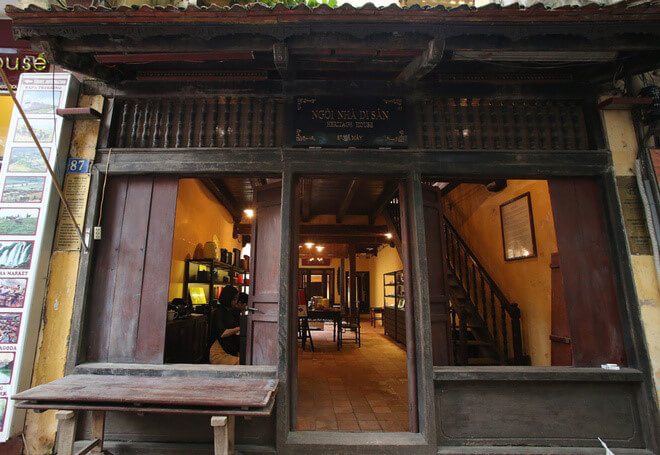
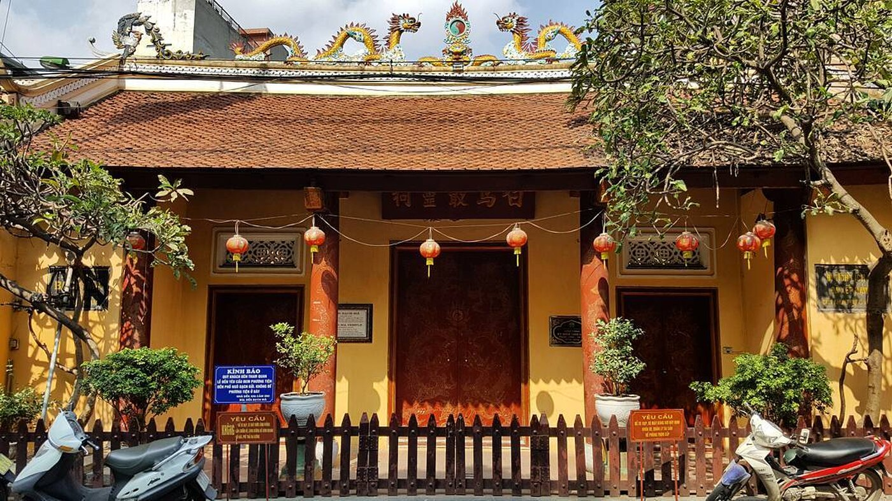
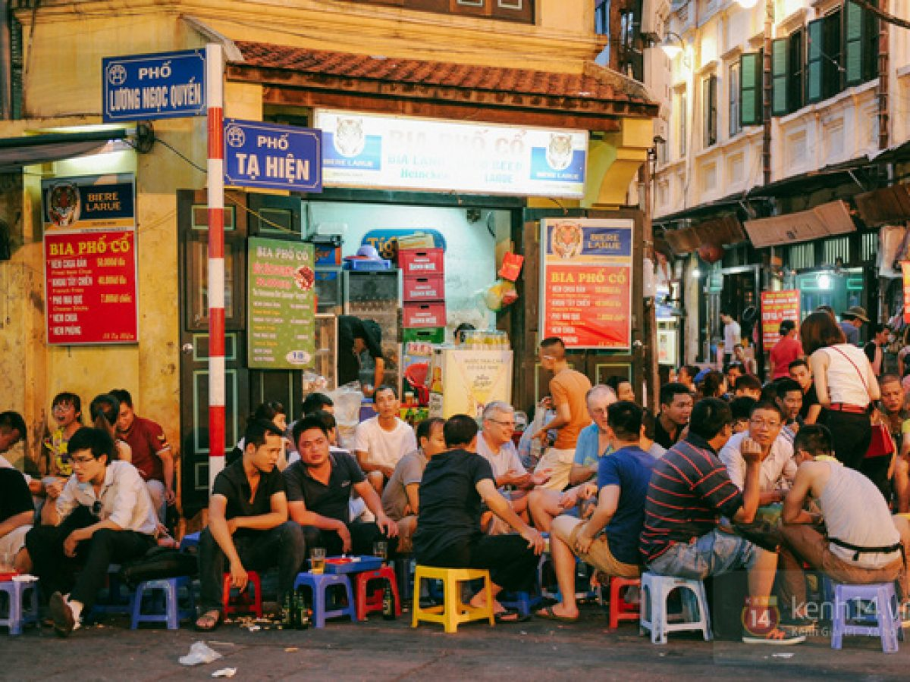
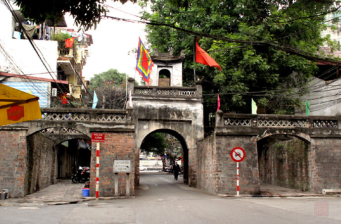

Kinh nghiệm du lịch Phố cổ Hà Nội
Nhắc tới Hà Nội thì chắc hẳn ai cũng biết đến “Hà Nội 36 phố phường” hay “phố cổ Hà Nội”, với những con đường đã lưu giữ kí ức lịch sử của thủ đô. Phố cổ nay là điểm du lịch hấp dẫn mà du khách không thể bỏ qua khi đến đây.
1. Phố cổ Hà Nội ở đâu?
Phố cổ Hà Nội nằm ở phía Tây và Bắc của hồ Hoàn Kiếm gồm 36 phố phường, mỗi phố lại tập trung bán một mặt hàng khác nhau. Giới hạn của phố cổ phía Bắc đến phố Hàng Đậu, phía Tây là phố Phùng Hưng, phía Nam là các tuyến phố : Hàng Bông, Hàng Gai, Cầu Gỗ và Hàng Thùng, phía Đông là đường Trần Quang Khải và Trần Nhật Duật.

Một góc của Phố cổ Hà Nội
2. Đến phố cổ như thế nào?
Đến phố cổ Hà Nội như thế nào? Có rất nhiều phương tiện để các bạn lựa chọn tới khu phố cổ Hà Nội như: xe bus, xe ôm, xe máy, taxi… Nếu đi bằng xe bus thì bạn có thể lựa chọn các tuyến xe: 09, 14, 36 để tới hồ Hoàn Kiếm hoặc 03, 11, 14, 18, 22, 34, 40 để tới Ô Quan Chưởng.
3. Những địa điểm vui chơi, thăm quan ở phố cổ Hà Nội
Cùng khám phá xem khu phố cổ Hà Nội có những địa điểm vui chơi và tham quan nào thú vị nhé!
-
Hồ Hoàn Kiếm
Hay còn có cái tên gọi khác là Hồ Gươm, gắn liền với truyền thuyết Rùa thần đòi gươm. Hồ Hoàn Kiếm nằm ở trung tâm thành phố, nơi thu hút rất nhiều khách du lịch trong nước và ngoài nước. Bên cạnh hồ có rất nhiều điểm du lịch khác : Đền Ngọc sơn, Tháp Bút, Cầu Thê Húc… Đến đây bạn có thể thưởng thức được món kem Tràng Tiền nổi tiếng. Hồ Hoàn Kiếm chính là địa điểm không thể bỏ qua khi du lịch phố cổ Hà Nội.
Hồ Hoàn Kiếm
-
Đền Ngọc Sơn
Đền Ngọc Sơn nằm trên đảo Ngọc của hồ Hoàn Kiếm, là nơi thờ thần Văn Xương và Đức thánh Trần. Để vào được trong đền bạn phải đi qua cầu Thê Húc. Quần thể công trình Đền Ngọc Sơn được xếp hạng di tích quốc gia đặc biệt ở Việt Nam. Tới đây bạn sẽ được tìm hiểu về sự tích của Hồ Gươm hay là lịch sử của Hà Nội.
Cổng vào Đền Ngọc Sơn
-
Chợ Đồng Xuân
Chợ Đồng Xuân là một trong những chợ lớn nhất ở Hà Nội và cũng là chợ lớn nhất nằm trong khu phố cổ Hà Nội. Tới đây bạn sẽ chứng kiến được cảnh mua bán tấp nập, sầm uất, buôn bán nhiều các mặt hàng. Bạn có thể tới chợ Đồng Xuân lựa chọn mua những món quà để đem về làm quà tặng.
Bên ngoài Chợ Đồng Xuân
-
Phố Hàng Mã – điểm đến thú vị trong khu phố cổ Hà Nội
Nằm trong khu phố cổ, phố Hàng Mã là được xem là một trong những con phố đông đúc và rực rỡ sắc màu nhất ở Hà Nội. Đặc biệt vào những dịp lễ, tết, con phố được trang hoàng bằng những đèn lồng, đồ chơi phát sáng, bóng bay khiến nơi đây không chỉ tràn ngập trong âm thanh, màu sắc, ánh sáng mà còn mang đậm dấu ấn tâm linh của người phương Đông.
Phố Hàng Mã
-
Nhà cổ Mã Mây
Là một trong những địa điểm tham quan hấp dẫn ở phố cổ, nhà cổ ở 87 Mã Mây là loại nhà ở truyền thống tái hiện được không gian sinh sống, nét đặc trưng của con người Hà Nội xưa. Ngôi nhà được mở cửa thường xuyên để cho khách du lịch đến thăm quan, giá vé vào cửa là 10.000đ.
Nhà cổ 87 Mã Mây
-
Đền Bạch Mã
Đền Bạch Mã là một trong tứ trấn của kinh thành Thăng Long xưa, nằm ở giữa phố Hàng Buồm, tại số nhà 76-78. Trong đền thờ thần Long Đỗ và ngựa trắng, từng được sử sách ghi lại nhiều sự tích hư thực. Đây là di tích lịch sử văn hóa có nghìn năm tuổi, cổ kính, lâu đời nhất trong số các ngôi đền xưa của kinh thành Thăng Long còn sót lại cho tới nay.
Đền Bạch Mã
-
Phố Tạ Hiện
Đây là con phố bé nhỏ nằm ở giữa lòng Hà Nội lúc nào cũng đông nghịt người, đây là địa điểm uống bia nổi tiếng ở Hà Thành được các bạn trẻ trong nước và quốc tế rất yêu thích. Uống bia xong ngay đó còn có 1900 Bar tầm 9h lên nhạc bạn có thể vào để quẩy. Nơi đây còn được biết đến với cái tên gọi “ngã tư quốc tế” đã được đưa vào danh sách “những nơi phải đến” khi đi du lịch Hà Nội của các du khách nước ngoài.
Phố Tạ Hiện
-
Ô Quan Chưởng
Ô Quan Chưởng là 1 trong 5 cửa ô còn sót lại của kinh thành Thăng Long xưa, được thiết kế theo kiểu vọng lâu – một kiến trúc đặc trưng của thời nhà Nguyễn. Tên của cửa ô là do người dân đặt để ghi nhớ công lao và sự hi sinh anh dũng của viên quan Chưởng Cơ trong thời kì chống Pháp.
Ô Quan Chưởng
4. Ăn gì ở phố cổ Hà Nội?
Khi du lịch phố cổ Hà Nội thì chắc chắn bạn sẽ không thể bỏ qua những món ăn ở đây. Sau đây chúng ta cùng tìm hiểu một số món ngon phố cổ cùng địa chỉ ăn uống nổi tiếng nhất ở đây nhé :
Ẩm thực chợ Đồng Xuân
Bún chả Hàng Buồm – 43 Hàng Buồm
Phở Bát Đàn – 49 Bát Đàn
Bún thang ở bún thang Cầu Gỗ – 32 Cầu Gỗ
Xôi chè, bánh trôi tàu ở quán chè bà Mai – 93 Hàng Bạc, quận Hoàn Kiếm
Bún đậu mắm tôm ở ngõ 31 Hàng Khay, quận Hoàn Kiếm
Chả cá Lã Vọng – 14 Chả Cá
Nộm bò khô, bánh bột lọc ở phố Hoàn Kiếm
5. Chợ đêm phố cổ Hà Nội
Chợ đêm phố cổ Hà Nội được hoạt động từ 18 đến 23h các ngày thứ 6, thứ 7 và chủ nhật hàng tuần, là một trong những địa điểm buôn bán sầm uất với sốc lượng gian hàng tham gia lên tới gần 4000. Các mặt hàng ở đây rất đa dạng và phong phú từ quần áo tới giầy dép, đồ dùng gia dụng, các đồ thủ công, quà lưu niệm… với giá cả bình dân.
Nhộn nhịp mua sắm ở chợ đêm Đồng Xuân
Vào các tối thứ 7 hàng tuần, 2 đầu tuyến phố có tổ chức các buổi biểu diễn, giao lưu văn hóa nghệ thuật dân gian truyền thống như: chèo xẩm, quan họ, ca trù. Đây là độc đáo của chợ đêm phố cổ thu hút rất nhiều du khách, đặc biệt là du khách nước ngoài.
Nghệ thuật ca nhạc đường phố ở phố cổ thu hút rất đông người tham gia
6. Lịch trình du lịch phố cổ Hà Nội để bạn tham khảo
- Buổi sáng các bạn có thể ghé qua ngõ chợ Đồng Xuân để thưởng thức những món ăn ở đây như bún ốc, bún riêu… Ăn sáng xong bạn có thể vào trong chợ để tham quan các gian hàng. Sau đó bạn có thể tiếp tục hành trình tới các địa điểm như Ô Quan Chưởng, nhà cổ Mã Mây, đền Bạch Mã
- Buổi trưa bạn có thể lựa chọn ăn bún chả Hàng Mành, bún đậu ngõ Phất Lộc hay cơm đảo gà rang trên phố Mã Mây. Đến chiều bạn tiếp tục tham quan hồ Hoàn Kiếm và đền Ngọc Sơn.
- Buổi tối nếu vào cuối tuần thì bạn có thể đi dạo ở phố đi bộ, khám phá chợ đêm. Hoặc không bạn có thể tới phố Tây Tạ Hiện ăn uống và ngắm nhìn sự nhộn nhịp của thành phố.
Nguồn: vntrip.vn